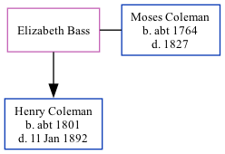

Elizabeth Bass was the 4 times great-grandmother of Nigel Horne and married Moses Coleman (with whom she had 1 child, Henry, ) in Badlesmere, Kent, England on Nov 22, 17921.
Public Member Trees Online publication - Provo, UT, USA: The Generations Network, Inc., 2006.Original data - Family trees submitted by Ancestry members.Original data: Family trees submitted by Ancestry members.
Family Tree

Interactive Map
Map
Generated by ged2site. Last updated on Feb 18, 2025